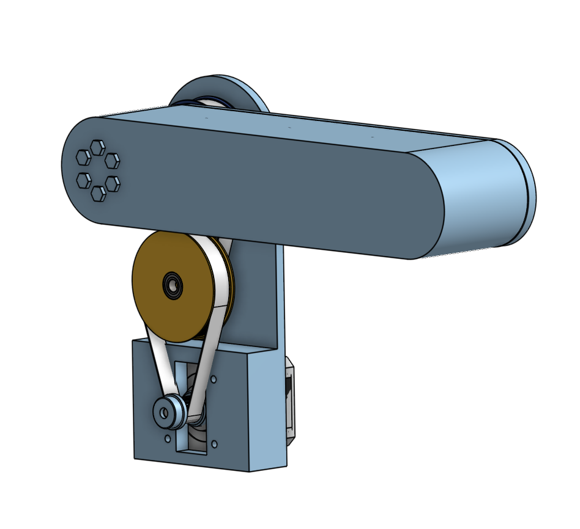

Phase 01 / Early Shoulder Concept
Initial belt-reduction shoulder study
The first shoulder concept used a compact belt path around the shoulder axis to increase torque while keeping the motor inside the arm's mechanical envelope.
- Established the basic motor-to-shoulder power-transfer direction.
- Revealed that pulley diameter and belt wrap would be limited by packaging.
- Created the design constraint that later led to a custom planetary reduction.